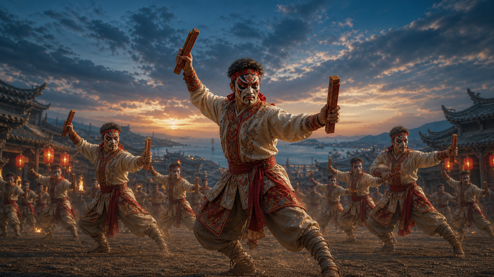
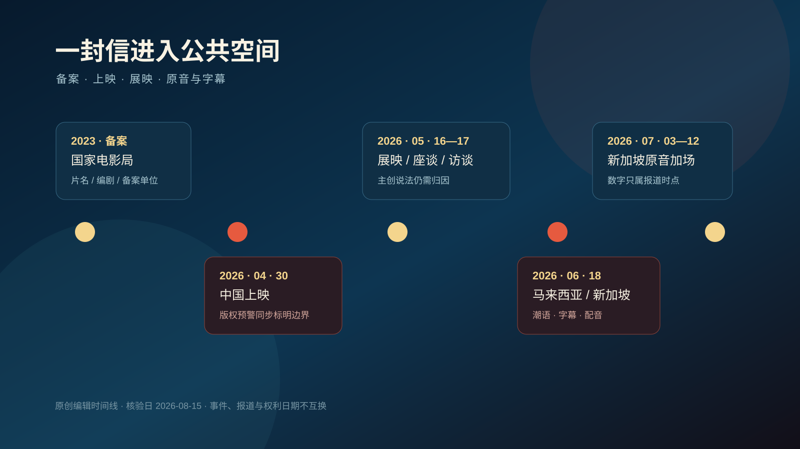
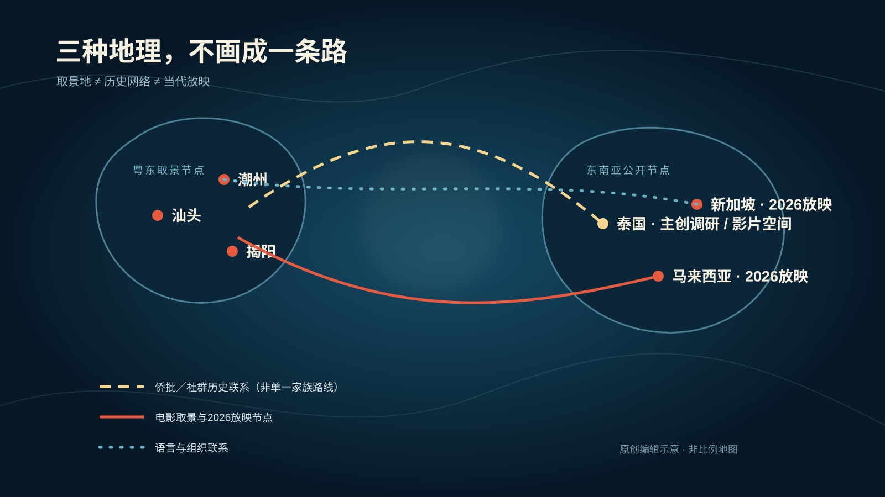
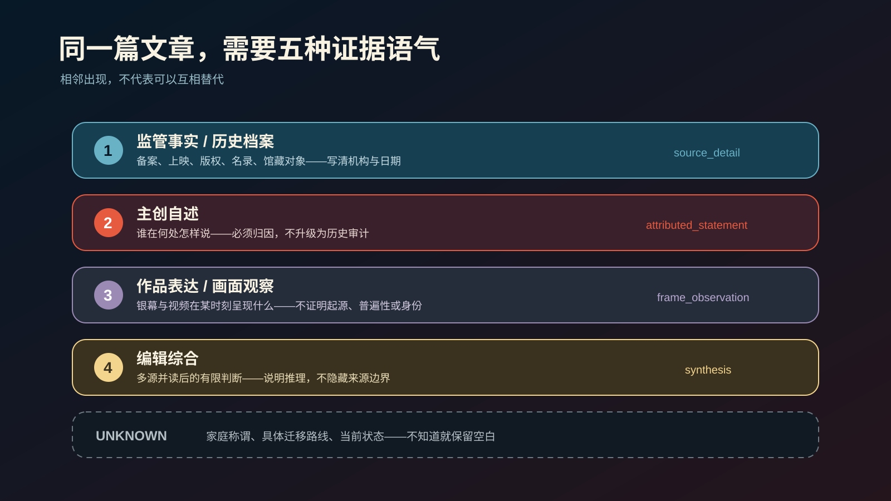

先判断谁在说，再决定能写什么。
官方档案、学术研究、具名报道和机构资料按直接性分层；搜索摘要、转载和百科只做线索，不冒充证据。

这里不是一堆链接，也不是把整个目录塞给模型。raw 保存来源身份与证据边界，topic 把事实、地方差异、生产细节和未知组织成可检索的主题页。
raw/记录发布者、日期、层级、地域、可支持论断、制作细节与限制；拒绝的材料同样留下审核理由。
topic/把来源编成主题索引，但不抹平城市、村落、家庭、年代与海外社群之间的差异。
source_ids每个关键事实都能反向回到 raw，不用“据说”“网上资料”替代责任明确的来源。
主题不只回答“是什么”。人物、动作、器物、声音、空间、时间与现场确认项被分别记录，方便文章、口播、分镜和展陈继续生产。
官方档案、学术研究、具名报道和机构资料按直接性分层；搜索摘要、转载和百科只做线索，不冒充证据。
汕头、潮州、揭阳、县区与海外社群分别标注。拜老爷和营老爷也不会因为名称接近就写成同一场景。
活动日、报道日、上映日与持续状态分开；“推进申报”不会被写成“已经入选”。
经明确同意的受众、家庭讲法和表达偏好只进入 local overlay；本地层不能静默覆盖公共事实。
用《给阿嬷的情书》验证整条生产链：从影片公开身份进入侨批、潮语、家庭记忆、汕潮揭与东南亚传播，又把史料、主创自述、作品表达和编辑综合分开。
电影可以让一封信成为悬念，档案则让它保持证据。
这篇长文不复述剧情，也不把电影当历史纪录。它追问银幕上的信与档案里的侨批在哪里相遇，又在哪里必须分开。



这条演示使用新华社导演专访：原视频保持 link_only，仓库不保存 MP4、电影截图、原音轨或完整逐字稿。
查看完整链路 →保存发布者、URL、日期、媒体类型、时长和 rights_status；能播放不等于能复制。
只处理任务需要的片段，分别标注受访者、旁白、字幕和画面观察。
每条 claim 写清能证明什么、不能证明什么；潮语人名和地名未经回听保持 unknown。
稳定信息沿 source_ids 进入公共 Wiki，镜头建议与事实分栏，个人材料默认留在本地。
口播事实、来源与镜头依据一一对齐；没有授权的原视频只提供回看链接。
“自进化”不是模型自动掌握真相。新资料要经过研究、准入、主题更新和结构检查；个人化则只在获得同意后写入本地层。
research实时核验热点、日期、发布者与相互冲突的说法。
ingest记录来源身份、层级、直接性、适用范围与不支持的外推。
evolve只把经确认、可长期复用的变化写进公共 Wiki 或获授权的本地层。
lint重建索引，检查断链、证据门槛、新鲜度与确定性输出。